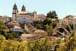
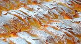
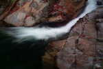
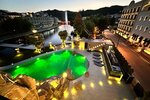
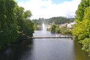
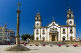
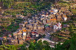
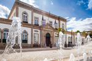

Fotografias








Vídeo 360°
Poesia
Viseu, Cidade de encanto
Entre colinas de verde pintado,
ergue-se Viseu, berço sagrado.
No ar respira-se história e tradição,
terra de afetos, de vinho e canção.
O vento acaricia o velho Fontelo,
ecoam lendas num sopro singelo.
As ruas de pedra guardam memórias,
da Sé imponente às mais belas histórias.
O Dão corre livre, puro e sereno,
traz no seu vinho um rubro terreno.
E quem por Viseu se deixa ficar,
leva no peito vontade de voltar.
Cidade-jardim, doce aconchego,
abraço de tempo, calor e sossego.
És coração que nunca se esqueceu,
orgulho de muitos, ó nobre Viseu.